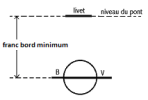

Le franc bord et les marques de franc bord
Définition : Le Franc Bord ( freeboard )
C'est la distance verticale mesurée entre la ligne de flottaison et le premier pont étanche. (appelé alors pont de franc bord)
Elle est exprimée en mètre.
Cette grandeur a été créée suite à de nombreuses catastrophes maritimes.
Des règlements internationaux ont été mis en place pour limiter l'enfoncement du navire dans l 'eau et donc faire en sorte que le franc bord soit toujours supérieur à une valeur fixée pour chaque navire par l'administration afin de garder une réserve de flottabilité.
Définition : Marques de franc bord
Il s'agit de marques peintes sur la coque au milieu de la flottaison imposant une limite minimale à respecter. Elles sont imposées par la Load Lines 66 et établies par les sociétés de classification qui les contrôlent.
1- Le livet de pont
Le niveau du pont de franc bord (premier pont étanche) est indiqué sur la coque par un trait horizontal appelé livet de pont

Cette marque est généralement peinte au milieu du navire, à l'endroit ou le premier pont étanche est le plus bas.
2- Disque Plimsol
Il est gravé au milieu du navire, sur le bordé de coque sous le livet de pont.
La ligne horizontale du disque matérialise le niveau que la ligne de flottaison ne doit pas dépasser.
Les lettres (ici BV) indiquent la société de classification qui les a établi. (Bureau Véritas en France, Lloyds Register au Royaume Uni, American Bureau aux USA,...)
3- Lignes de charge
Il existe en réalité plusieurs francs-bords pour un même navire, chacun tenant compte de l'importance du péril que court le navire selon :
la saison ;
les espaces maritimes fréquentés ;
le type d'eau rencontrée ;
le type de navire ( cargaison transportée : bois en pontée, navire citerne).
A chaque franc-bord correspond une ligne de chargement maximum, nommée ligne de charge (load line). Tous les francs-bords autorisés sont déduits du franc-bord de référence : le franc-bord d'été (été conventionnel en Atlantique Nord )
Les lignes de charge sont elles aussi matérialisées sur le bordé de coque, à proximité de la marque de franc-bord. La ligne de charge ne doit jamais être immergée selon la saison et la zone dans laquelle est le navire
Zones de franc bord
Des cartes de zones précisent les limites des zones permanentes et saisonnières dans lesquelles ces francs-bords doivent impérativement être appliqués.


Il est de la responsabilité du Capitaine de:
Rendre étanche son navire,
Avoir le certificat de Franc-bord (délivré par la société de classification et valable 5ans) à jour,
Faire part des modifications importantes au BV,
Respecter les zones.
Le certificat de FB est délivré à condition :
que la solidité de la structure du navire soit suffisante,
que la stabilité soit suffisante pour tous les cas de chargement possibles
que le cloisonnement soit adapté pour résister à l'envahissement
que les ouvertures nécessaires à l'exploitation du navire puissent être rendues étanches
que des sabords de décharge permettent d'évacuer au plus vite l'eau embarquée (paquets de mer).